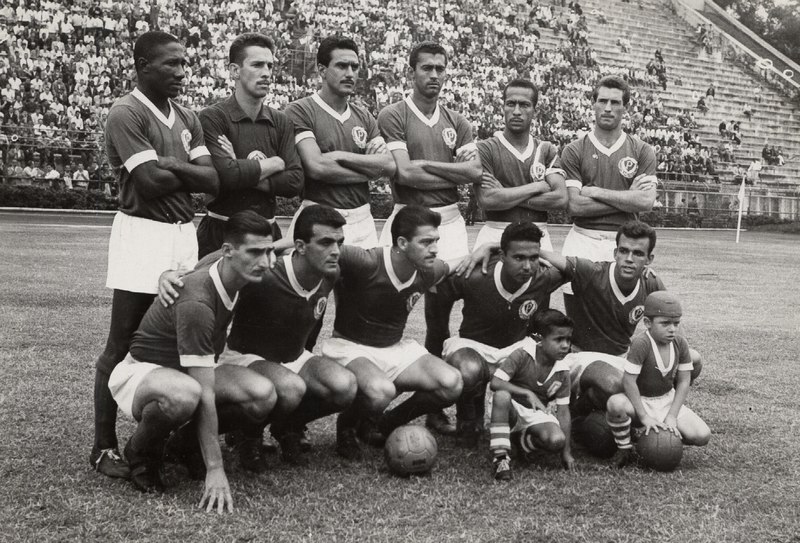
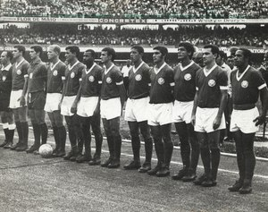
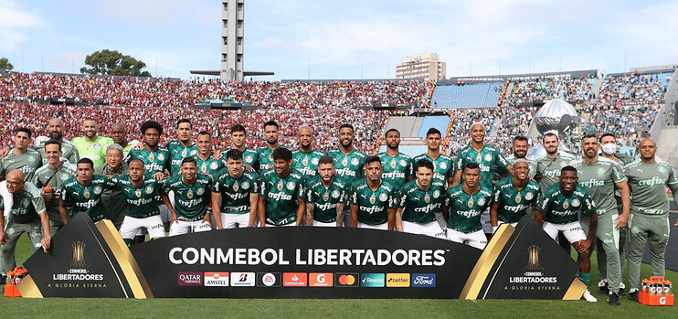

As academias do Palmeiras
Primeira Academia
A Academia do Palmeiras dos anos 60 é um dos maiores esquadrões da história do futebol brasileiro. Em pé: Djalma Santos, Valdir, Valdemar Carabina, Aldemar, Zequinha e Geraldo Scotto. Agachados: Romeu (auxiliar), Julinho Botelho, Nardo, Américo, Chinesinho e Romeiro.

Segunda Academia
A chamada "Segunda Academia", por sua vez, durou menos tempo, de 1972 a 1974, mas foi o suficiente para cravar na memória - e no coração - dos torcedores uma escalação que soa como uma boa música: Leão, Eurico, Luís Pereira, Alfredo e Zeca; Dudu e Ademir da Guia; Edu, Leivinha, César e Nei.

Terceira Academia
Weverton, Gustavo Gómez, Danilo, Raphael Veiga, Dudu e Scarpa podem ser a base dessa terceira Academia. Eles jogam fácil, cada um na sua.
